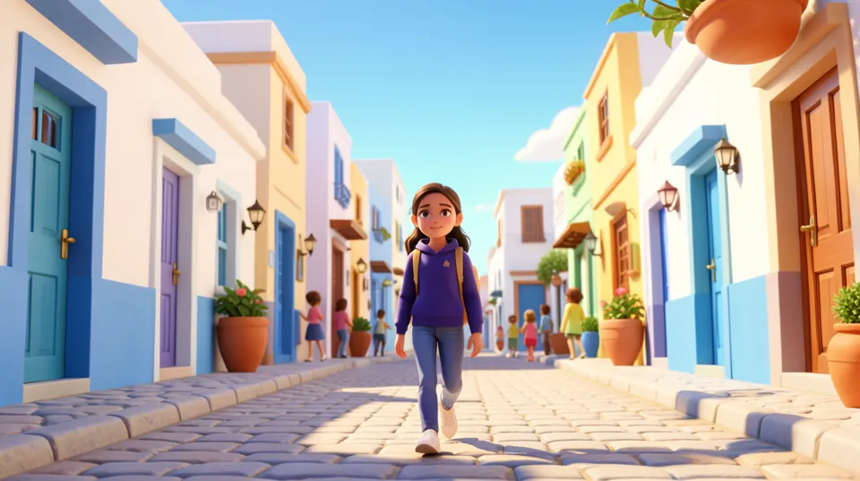
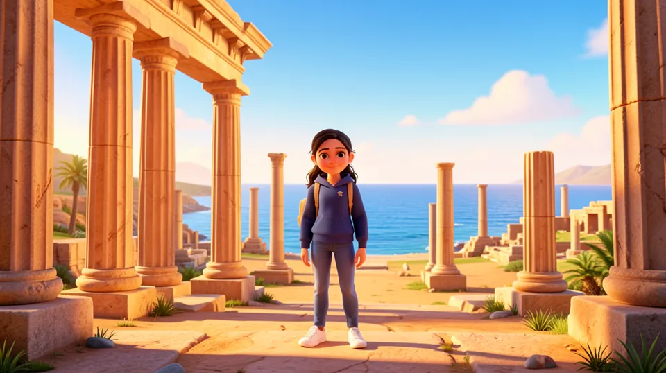
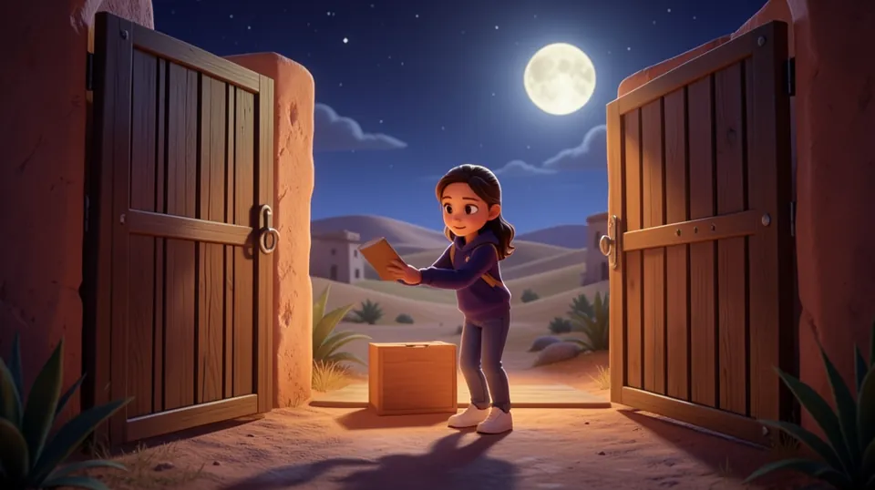
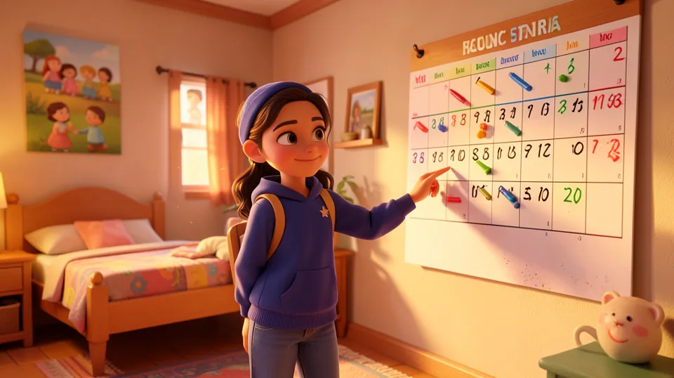
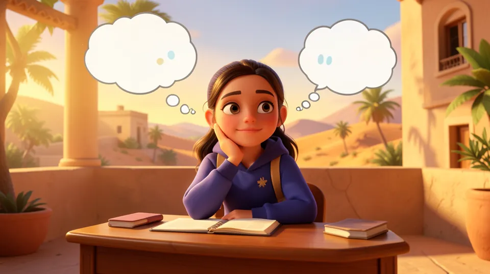
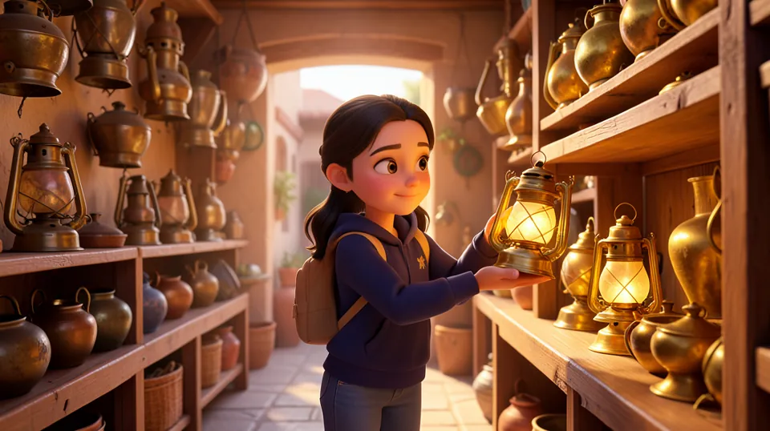
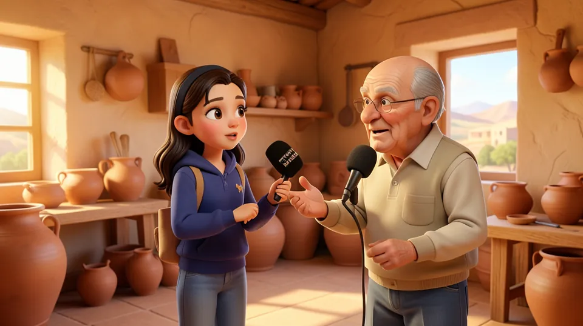
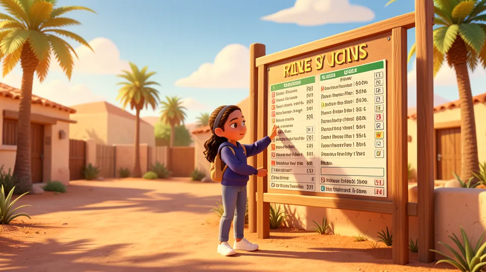
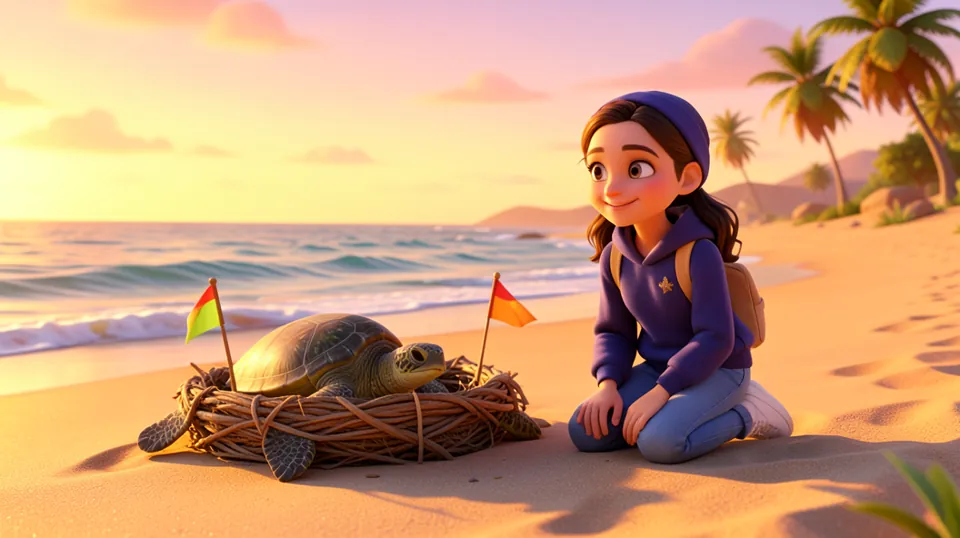

10 leçons pour parler comme une vraie B2 : chaque leçon commence par un dessin animé dont tu es l'héroïne, puis la grammaire, la conjugaison, le vocabulaire, l'oral et un bilan. Miss Yasmine te guide, Alice lit l'anglais.

1🏫 A Day in My LifePresent simple ou present continuous ? Les verbes d'état 2🏖️ A Summer in DjerbaPast simple et past continuous : raconter au passé
3🏛️ Have You Ever Been to Carthage?Present perfect ou past simple ? for, since, ever, never, already, yet
4🐴 The Lost HorseLe past perfect et les temps du récit
5🏆 The Big ShowLe futur : will, be going to, present continuous, future continuous
6💡 If I Were an InventorLes conditionnels : 0, 1, 2 et 3
7🔍 The Medina MysteryLa voix passive à tous les temps
8🎤 The InterviewLe discours rapporté (reported speech)
9🪖 Rules of the Riding ClubLes modaux : must, have to, should, might, can't have…
10🐢 Saving the Sea TurtlesLes relatives (who, which, that, whose, where) et les phrasal verbs